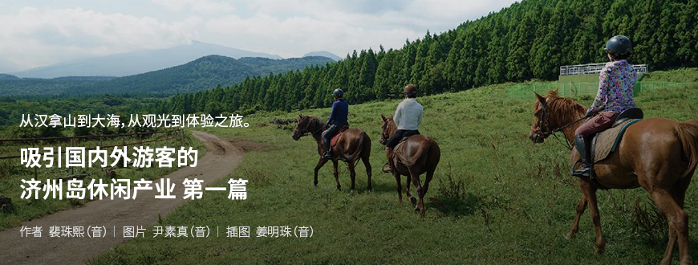
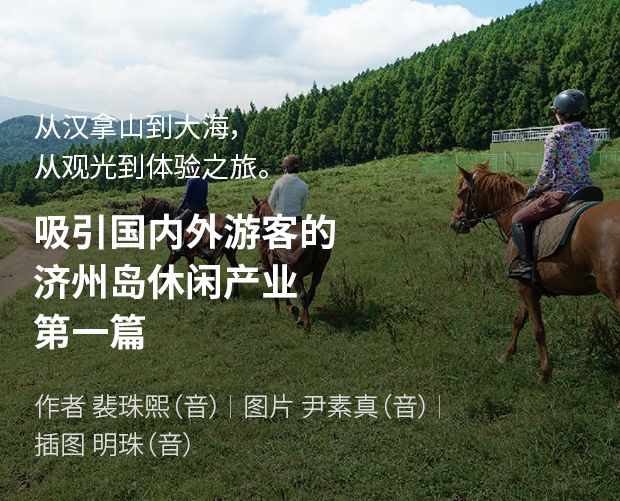
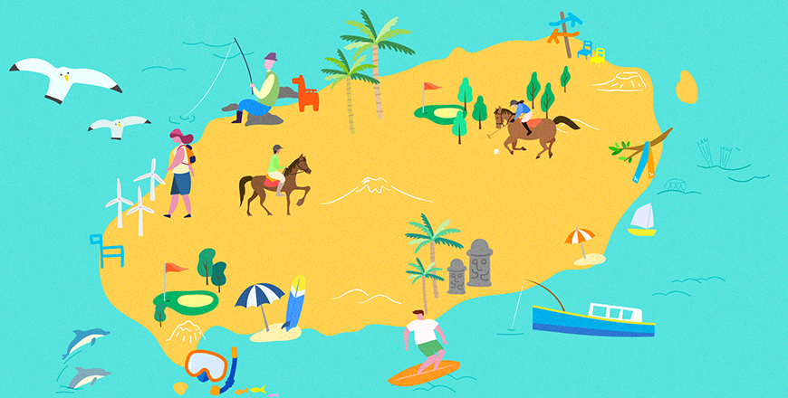
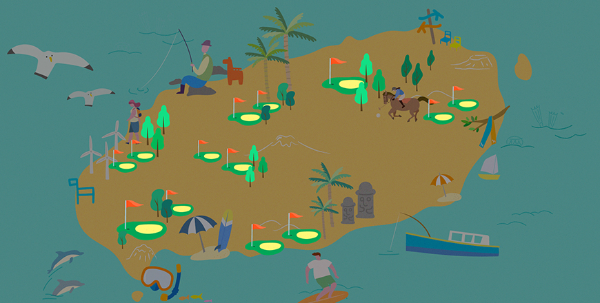
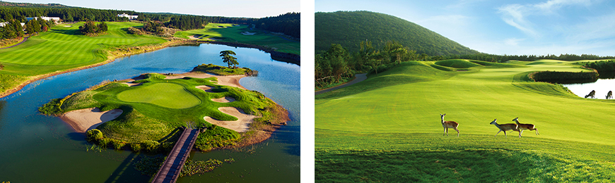
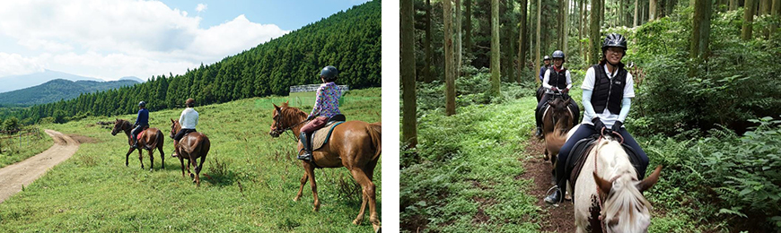
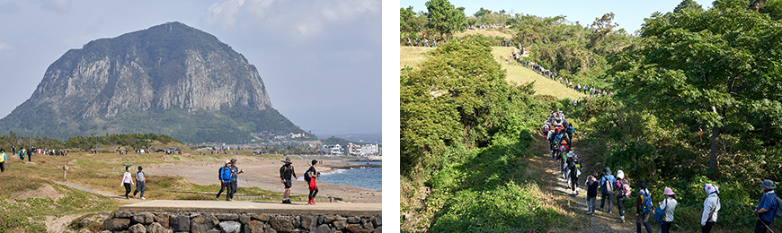
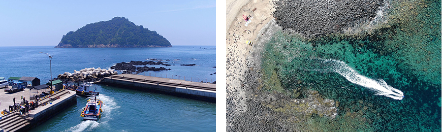
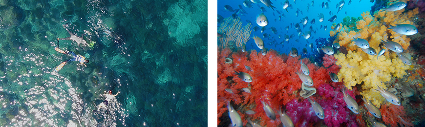

기획취재콘텐츠
- Home
- 제주라이프
- 기획취재콘텐츠
吸引国内外游客的济州岛休闲产业 第一篇새로운 글





济州岛是名副其实的休闲运动与体验项目的天堂。火山爆发形成的陡峭汉拿山、丘陵流畅的中山间、广阔的平原和大海等，济州岛的各处都运营着多种多样的休闲运动与体验项目。不同形态的地形为济州岛成为休闲产业中心提供了最佳的环境条件。四季温和的气候、丰富的风量与日照量也是帮助济州岛的休闲产业发展的必不可少的核心因素。
去济州岛旅游时，大多数人都会喜欢像游览名胜一样欣赏济州岛美丽的自然风景，不过直接接触大自然，通过全身去体验、感受的体验之旅也颇受欢迎。据济州岛旅游发展局于今年6月发布的《未来一年济州岛旅行计划问卷调查》显示，对于旅行中要做什么的问题，有77.7%的受访者表示会欣赏自然景观，52.6%的受访者表示会健行，12.7%的受访者表示会体验高尔夫、骑马等休闲运动。
那么，吸引国内外游客、引领济州岛旅游产业轴心之一的济州岛休闲产业的特点和魅力都有哪些呢？以下就是对高尔夫与骑马等济州岛代表性休闲运动、吸引游客目光与脚步的健行、海上体验等多种休闲产业的介绍。
在得天独厚的自然环境下悠闲穿梭于果岭——高尔夫

据韩国高尔夫球场运营协会透露，截至2020年1月，韩国共运营着494个高尔夫球场，其中有41个位于济州岛。这是继京畿道和江原道、庆尚北道之后的第四大规模。济州岛的高尔夫产业曾在韩国全域泛滥的高尔夫球场之间的激烈竞争与针对会员制高尔夫球场废除个别消费税免除政策下，一度萎靡，但随着今年因新冠肺炎疫情这一特殊情况与重新执行的个别消费税减免政策，得以再次扬帆起航。
得益于“高尔夫是在广阔的户外自然空间以少数人为单位安全享受的体育活动”这一认识的扩散，加上在如今无法去国外旅行的情况下，高尔夫游客们纷纷将目光转向济州岛，使济州岛的高尔夫球场在新冠肺炎疫情下仍取得了不俗的成绩。
今年上半年，虽然入岛的游客大幅减少，但岛内游客反倒增加，促使1月至3月高尔夫球场的游客达到了35.855万人，与去年同期的37.3067人相比，仅减少了3.9%。此后，随着经济逐渐复苏，8月份的访客人数几乎达到了与新冠肺炎疫情之前持平的状态。随着夏日休假季节的到来，济州岛高尔夫球场接连出现了“预约已满（full-booking，已预约）”的事例，鼓舞了人心。

- 举行CJ杯的九桥俱乐部18号洞（左）、11号洞（右）全貌
与济州岛的大自然相映成趣的美丽果岭令人驻足 ⓒCJ集团 -
与济州岛的大自然相映成趣的美丽果岭令人驻足 ⓒCJ集团 -
高尔夫的魅力在于，可以在低矮的丘陵地带和广阔的草原闲适散步，并在最后关头集中精力强有力地挥出球杆。在这一基础上，如果再加上“济州岛”这一地区特点，就会增添更多的乐趣。四季都适合打高尔夫的温和气候、干净的空气、随处可见的汉拿山雄姿、起起伏伏的山丘、不知从何处突然吹来的风，以及在果岭玩耍的獐子、具备顶尖水准的高尔夫球场设施等，都是在济州岛打高尔夫时更加愉悦的核心因素。
据负责在韩国首次举办PGA巡回赛“CJ杯@九桥俱乐部”的CJ集团体育营销部长金有相（音）透露，许多参赛选手对体现济州岛自然环境的球场赞不绝口，表示对随着济州岛的风向变化的轨迹印象深刻。乔丹·斯皮思在采访中也表示，“济州岛实在是太美了。我通过电视看到过球场，而在练球时再次确认了球场的完美，这是通过许多想象力才能诞生的球场。而且在挥杆时要善于掌握风速，我认为这一点非常适合我。”
可见，济州岛的高尔夫球场充满了魅力，不断吸引着国内外高尔夫选手和球迷的脚步。虽然许多人呼吁为了暂时停滞不前的高尔夫产业的复兴，每个高尔夫球场都需要开发多种商品，通过进攻型营销等进行自救，但可以肯定的是，济州岛得天独厚的地形条件和景观将是让高尔夫成为济州岛休闲产业轴心的极大优势。
马产业特区的声望成为休闲体育的声望——骑马&马球
最近，济州岛和济州岛旅游发展局发布了夏季可以在济州岛享受的康复、治愈项目“十五大济州岛养生旅游”。“养生（Wellness）”是“康乐（Well-being）”、“幸福（Happiness）”以及“健康（Fitness）”的合成词，意味着身体、精神、社会层面上的健康状态。由自然&森林治愈、康复&冥想、美容&Spa、体验&快乐治愈等4个主题构成的15个景点内，还包括作为济州岛代表性体验项目的骑马。
作为韩国最早的马产业特区，济州岛内运营着约58处骑马场。大部分都提供着骑马培训和体验项目，即使是新手也可以轻松学习，安全体验，具有很高的人气。每个骑马场都运营着从绕行骑马场的简单体验到在林道、海边、山岳骑乘等多种项目。

- OTGWIMA主题城的骑马项目 ⓒOTGWIMA主题城 -
被选为养生旅游景点的“OTGWIMA扁柏树林骑马”运营着多种体验项目，其中包括根据专业教练的指导，从在马舍中牵出马匹到真正骑马，可以循序渐进地学习骑马的培训课程；在长10.5千米的杉树林道自由骑乘的外部路线；在10月~4月，可以在表善海边享受海边骑乘的外部路线；在上午出发，到达城板岳区间后返回的山岳骑乘一日路线等。骑马的乐趣在于可以与马交流，此外，在充满自然气息的林间或海边，时而缓慢，时而快速地骑着马奔跑，感受与自然融为一体的体验也非常有趣。
在韩国，有一项只能在济州岛享受的特色体育项目，那就是马球。马球是以4比4的人数组成两队进行对决，由选手骑在马上边奔跑边用球棍将球击入对方球门，以此决出胜负，充满了紧张刺激感的体育项目。普遍被认为是专属于王族或贵族们的高级体育活动，但可以享受这种马球的韩国马球乡村俱乐部就位于济州岛。
- 与国外代表团在韩国马球乡村俱乐部举行交流比赛的现场 ⓒ韩国马球乡村俱乐部 -
于2010年成立的韩国马球乡村俱乐部位于济州市旧左邑杏源里一带，占地21.3277万平方米（约6.45万坪），因拥有在全世界范围内也屈指可数的优秀设施、设备、系统和服务而闻名。就连体验过国外著名马球俱乐部的富豪们也对此表示震惊。
韩国马球乡村俱乐部的老会员朴勇柱（音）选手说道：“马球是一项绅士又细腻的运动，同时还具有体育及乡村俱乐部的性质。每次比赛时，我都会完全投入，大脑变得一片空白，不仅能消除所有的压力，还能获得可度过活力一周的动力，这就是马球的魅力。”同时他还说道：“马球乡村俱乐部的优点在于正好位于能够使大家记住韩国之美的象征性岛屿——济州岛，而且还临近大海和山等自然环境。”
走进济州——偶来小路徒步&健行
提起“徒步”，很多人都会想到代表性的旅游景点——济州岛偶来小路。据文化体育观光部和韩国旅游发展局最近发布的《2019年徒步旅游实态调查》显示，喜欢徒步旅游的年轻人开始增多，且随着“独旅（独自旅行）”的流行趋势，喜欢“独自徒步”旅行的人也骤然增加，而在过去1年里游客访问量最多的徒步旅游路就是济州偶来小路（15.9%）。
2007年开放第一条路线的济州偶来小路是指可以徒步游览济州岛的长途徒步旅游路线，共26条，距离达425千米。游客们表示，在济州偶来小路可以欣赏到济州岛的各个角落，且通过漫无目的地向前行走，可以整理苦恼或复杂的思绪，这就是济州偶来小路的魅力。

- 济州偶来徒步节活动现场（2019） ⓒ社团法人济州偶来 -
创造并管理济州偶来小路的“社团法人济州偶来”标榜着“与行人、生活在道路上的地区居民以及让出道路的大自然一起开创幸福之路为目标，打造“尽情游玩、尽情休息、尽情行走的同行路”。不仅建设并整改偶来小路，还同时开展了激活旅游、教育、环境、文化、艺术、地区社区等多个领域的活动，每年还会举办偶来徒步节，致力于增加“偶来客（喜爱在偶来涉足徒步的游客）”。
除了偶来小路徒步以外，还有一种徒步旅游的方式，那就是健行 。健行属于攀登和长途旅行的中间形态，其特点是每天背着所有装备和行李步行15~20千米左右。最近，以汉拿山或山峰、思连岳林道、特定村庄等路线在济州岛纯净自然中徒步的健行项目尤其受到欢迎。健行的优点在于可以行走在纯净的大自然，用五感感受原汁原味的自然。此外，也能看到平时乘坐交通工具快速经过时忽略的美景，彻底陷入济州岛的魅力当中。
※ 1) 没有专业的登山技术和知识也能享受的山岳自然观察之旅。目的不是攀登山顶，而是欣赏山景，是一种特别的旅行方式，这类人被统称为“健行族”。
来源：NAVER知识百科登山常识词典 (https://terms.naver.com/entry.nhn?docId=1690495&cid=42898&categoryId=42898)
来源：NAVER知识百科登山常识词典 (https://terms.naver.com/entry.nhn?docId=1690495&cid=42898&categoryId=42898)
- 2019瑞典北极狐经典穿越之旅韩国站活动现场 ⓒ皮埃尔拉本韩国 -
去年，作为瑞典户外品牌分公司的韩国瑞典北极狐在济州岛举行了健行活动“2019瑞典北极狐经典穿越之旅”。据有关人士透露，除工作人员外，共有400多人参加了3天2夜的汉拿山及步道健行，虽然难度较大，但通过在济州岛惊人的自然景观中学习爱护自然的治愈时间，使国内外所有参赛者都获得了极大的满足。
如此，随着想要徒步游览济州岛的游客增多，最近也出现了《徒步旅途的建设、管理及支援法律案》等提议，预计可能会制定包括济州岛在内的全韩国范围内的“徒步路”系统管理和支援制度。期待通过国家支持，促进更加安全、系统的韩国徒步旅游文化。
济州岛纯净海洋的厚礼——海上体验
济州岛四面环海，拥有众多的海水浴场和独特的水下秘境等多种海洋休闲基础设施，是韩国海洋休闲运动的圣地。根据2018年济州岛调查公布的《十大水下秘境》，其中代表性的有，将海底洞穴、拱形、柱状节理、海底火山口、软珊瑚群落等开发为了新的水下旅游项目，并通过这一项目，宣传了济州岛的美丽景观。
以拥有美丽资源的大海为重点，最近在游客之间出现了新的热门话题，那就是海上体验。海上体验是指乘船出海体验潜水、跳水，享受大海，欣赏水中景色和海鱼的项目。作为东南亚地区的旅游项目广为人知，但在济州岛也同样可以体验，因此深受欢迎。

- 离港前往海上体验场所的船舶 ⓒDiscover JEJU -
其中，最具代表性的活动就是由济州海洋活动策划运营公司Discover JEJU运营的“甫涯木浦海上体验”。自2018年推出“甫涯木浦海上体验”后，受到了游客们的热烈响应。“甫涯木浦”是指位于西归浦市甫木港的济州方言, 是在甫木港使用当地居民的渔船前往被指定为天然纪念物第18号的森岛观赏纯净海水中的珊瑚礁和鱼群的活动。体验者们看到隐藏在海底的秘境都不禁感叹、震惊于其中的美丽景象。

- 可以通过潜水观赏海底美景 ⓒDiscover JEJU -
甫涯木浦海上体验还在海洋水产部主办的第4届优秀海洋旅游商品征集活动中被选为了最优秀的旅游商品。Discover JEJU以甫涯木浦海上体验的成功为跳板，推出了从沙溪浦口出发的“兄弟岛海上体验”，兄弟岛海上体验是和当地海女一起进行的项目，可以更加安全地去体验。Discover JEJU特殊的地方在于推出的体验项目是利用地区居民的基础设施，以帮助居民持续获得收益的方式运营。
济州岛休闲产业的步伐将持续迈进
除了前面提到的高尔夫、骑马、马球、偶来小路徒步和健行、海上体验之外，济州岛还利用无形的环境资源，运营着许多休闲运动和体验活动项目。对此，专家们提出建议，休闲运动种类的多样化固然重要，但在新冠肺炎时代，应同时推出“无接触”服务等符合时代及消费者需求的旅游商品。为了将济州岛旅游业的危机转化为契机，期待今后能发掘、开发更多休闲运动和体验活动。
다음글